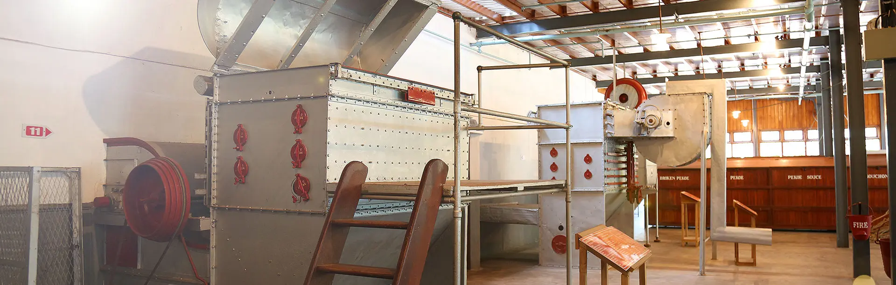
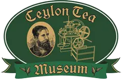

The Ceylon Tea Museum at Hantane, three kilometres from Kandy city is served by a motorable road that circles the museum, provides easy access and adequate parking facilities for cars and tourist coaches. The museum consists of four floors. The ground floor and the second floor exhibit very old items of machinery and the first floor consist of a library and an auditorium with facilities for audio visual presentations. The third floor is allocated to tea sales outlets, where a selection of Sri Lanka's fine tea is available. The entire top floor is a tea cafe. A panoramic view of the Kandy town surrounded by the beautiful Hunasgiriya, Knuckles Range and the Matale range of hills can be viewed through a telescope mounted on the fourth floor. The grounds surrounding the Tea Museum are landscaped with different varieties of teas. Kandy is a mandatory stop virtually on every tourist's itinerary and the location of the Ceylon Tea Museum at Hantane enhances the attraction of the hill country to visitors. Additionally, its proximity to the Peradeniya Botanical Gardens and Loolecondera estate, where tea was first grown commercially in Sri Lanka makes Hantane the perfect location.

The Ceylon Tea Museum is located in the former Hanthana Tea Factory, which was originally constructed in 1925. It is situated 3 km south of Kandy. Hanthana was one of the first successful areas to cultivate tea following the failure of coffee production on the island. The Ceylon Tea Museum was incorporated on 9 January 1998, under Section 21 of the Companies Act of 1982, in a move initiated by Clifford Ratwatte (Chairman of the Sri Lanka Tea Board). The museum was formally opened on 1 December 2001.
